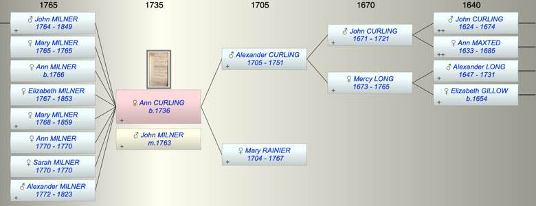
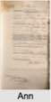

| [Index] |
| Ann CURLING (1736 - ) |
|  |
|  |
| b. 1736 at St Laurence |
| m. 1763 John MILNER |
| Parents: |
| Alexander CURLING (1705 - 1751) |
| Mary RAINIER (1704 - 1767) |
| Siblings (6): |
| George CURLING (1726 - 1783) |
| Mercy CURLING (1728 - 1752) |
| Daniel CURLING (1729 - 1782) |
| Alexander CURLING (1731 - 1732) |
| Mary CURLING (1733 - 1750) |
| Alexander CURLING (1740 - ) |
| Grandchildren (1): |
| Ann MILNER |
| Events in Ann CURLING (1736 - )'s life | |||||
| Date | Age | Event | Place | Notes | Src |
| 1736 | Ann CURLING was born | St Laurence | Note 1 | ||
| abt 1751 | 15 | Death of father Alexander CURLING (aged 46) | |||
| 1763 | 27 | Married John MILNER | Note 2 | ||
| 1764 | 28 | Birth of son John MILNER | Wapping | Note 3 | |
| 1765 | 29 | Birth of daughter Mary MILNER | |||
| 1765 | 29 | Death of daughter Mary MILNER | |||
| 1766 | 30 | Birth of daughter Ann MILNER | |||
| 1767 | 31 | Birth of daughter Elizabeth MILNER | Wapping | Note 4 | |
| 26 Aug 1767 | 31 | Death of mother Mary RAINIER (aged 63) | Note 5 | ||
| 1768 | 32 | Birth of daughter Mary Rainier MILNER | Wapping | Note 6 | |
| 1770 | 34 | Birth of daughter Ann Curling MILNER | bap St John Wapping 2 Jan 1770 | ||
| 1770 | 34 | Birth of daughter Sarah MILNER | Wapping | Note 7 | |
| 1770 | 34 | Death of daughter Ann Curling MILNER | Note 8 | ||
| 1770 | 34 | Death of daughter Sarah MILNER | Wapping | Note 9 | |
| 06 Oct 1772 | 36 | Birth of son Alexander MILNER | Wapping | Note 10 | |
| 1823 | 87 | Death of son Alexander MILNER (aged 51) | Note 11 | ||
| 1849 | 113 | Death of son John MILNER (aged 85) | Chadwell Heath | Note 12 | |
| 1853 | 117 | Death of daughter Elizabeth MILNER (aged 86) | Wapping | Note 13 | |
| 1859 | 123 | Death of daughter Mary Rainier MILNER (aged 91) | |||
| Created on a Mac™ using iFamily for Mac™ on 8 Oct 2023 |